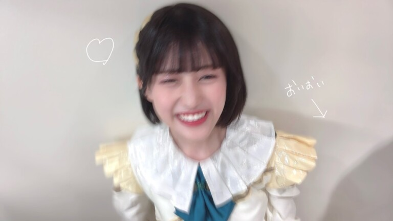

橘杏咲の立ち話もなんですから！ 第７回橘杏咲的“站着聊可说不完！” 第7回
皆さん、こんにちは！橘杏咲です！
大家好！我是橘杏咲！
今月は2月！体調を崩しやすい日々が続いていますが、皆さんお元気ですかー！！例年より気温は暖かく感じますが、流石にもう真冬ですからね。寒いですね…
这个月是2月！最近一直是容易生病的时节，大家身体都还好吗——!! 虽然感觉气温比往年暖和些，但毕竟已经到了隆冬，还是很冷呢……
私は今年、最強のダウンを購入したので冬を乗り越えられそうです😸
我今年入手了一件最强羽绒服，看来能稳稳熬过这个冬天啦😸
あ、あの！すみません、ねこあつめ2の話をしていいですか？自分で打った猫の絵文字でうちのネコちゃん🐈を思い出してしまい、。
啊、那个！不好意思，我可以聊聊《猫咪后院2》吗？刚才自己打了个猫咪表情，结果一下子想起我家的小猫咪🐈了……
私がここ数ヶ月ドンハマりしている「ねこあつめ2」というゲームがありまして。「ねこあつめ」自体とても有名なゲームなので知っている方も多いのではないと思います。
最近这几个月我彻底沉迷进了一款叫《猫咪后院2》的游戏。《猫咪后院》本身就是很出名的游戏，应该有不少人都知道吧。
簡単に説明すると、おもちゃとごはん(かりかりや缶詰)を置いているとネコちゃんがにわさきに遊びに来てくれる。というゲームです！
简单来说，就是在院子里放上玩具和猫粮（干粮或罐头），小猫咪就会来院子里玩的一款游戏！
遊びに来てくれたネコちゃんが図鑑に記録されるのですが、名前を変更することができるので、私はネコちゃん1匹1匹にそれぞれ最近会った友人の名前をつけてるんです。
来玩的小猫咪会被记录进图鉴，而且还能修改名字，所以我给每一只小猫咪都分别取了最近见过的朋友的名字。
名前を借りた友人に、そのネコちゃんが来ると写真を送りつけて、私と一緒にねこを集めよう！と言っているのですが、大抵は「よかったね♡」としか返ってきません！
每当那只小猫出现，我就把截图发给借用了名字的朋友，安利她们“跟我一起收集猫咪吧！”，结果大多数人只会回我一句“太好啦♡”！
唯一ごまちゃん(伊駒ゆりえちゃん)だけはねこをあつめることにハマってくれました💖なんて良い友人なんだ。
唯独小胡麻（伊驹百合绘）彻底入坑了集猫大业💖 真是个多么贴心的好朋友啊。
LINEで逐一、にわさき拡張できたよ！もようがえしたよ！と報告してくれて嬉しいです。可愛いです。
她还在 LINE 上事无巨细地向我汇报“院子扩建好啦！”“重新装修啦！”，我超开心的，太可爱了。
最近はしぃしぃ(鳴沢優海ちゃん)もハマりつつあるようで、ちょこちょこネコちゃんの写真を送ってくれます😸ありがとう。
最近しぃしぃ（鸣泽优海）好像也渐渐上头了，时不时会给我发小猫咪的截图😸 谢谢你。
本当はうちのネコちゃんの紹介を隅から隅までしたいのですが、キリがないので一旦やめて本編に入ります。また今度、ねこあつめ2のお話をさせてください。
本来我想把我家的猫咪从头到尾详细介绍一遍的，但说起来没完没了，先就此打住进入正题吧。下次再让我聊聊《猫咪后院2》哦。
さて、今月も1月にあった出来事をゆったり振り返ってお話していこうと思います。
好啦，这个月我也想悠闲地回顾一下1月发生的点点滴滴。
年末年始はまったり、というよりかなりアクティブに過ごしました。観劇をし、ディズニーへ行き、観劇をしました！！笑
年末年初我与其说是悠闲度过，不如说是过得相当充实活跃。看了舞台剧、去了迪士尼，又看了舞台剧!!（笑）
特に年始の観劇始めは最高でした…劇団四季さんの『アナと雪の女王』を観たのですが、最高でした。今でもあの舞台と歌声が鮮明に記憶に残っています。
尤其是年初的第一场观剧体验简直绝了……去看了四季剧团的《冰雪奇缘》，实在太棒了。至今那片舞台和歌声依然清晰地印在我的脑海里。
観劇へ行くと毎回なる現象ですが、終演後、多幸感に包まれに包まれ、このまま余韻に浸りながら目を瞑りたい…….となるんです。
每次看完舞台剧都会出现一种固定现象：散场后整个人被层层幸福感包裹，满脑子只想着“好想就这样沉浸在余韵里闭上眼睛……”。
一旦自分の中にあるドデカ多幸感を落ち着いた場所で練ってから、語り合いたいんですよ！！
我想先找个安静的地方，把心里这团巨大的幸福感细细回味消化一下，然后再畅所欲言地讨论!!
これは観劇だけに関わらず、あらゆるエンタメを浴びた後に起こる現象なのですが、きっと皆さんも経験したことあるのではないでしょうか！！
这不仅限于看舞台剧，只要是沉浸式体验完各种精彩娱乐作品后都会这样，大家一定也有过同样的感受吧!!
もう一度観たい！このまま初めに時が戻ってくれれば！と何度思ったことか。
不知有多少次心里呐喊着“好想再看一遍！时间要是能倒流回开场就好了！”。
けれど、この余韻を感じるだけのなんとも言えない時間、良くないですか！このまま時が戻ればいいのに…(戻らない) の気持ちよくないけれど気持ちのいい時間、私すきです。幸せだったなぁ〜〜❄️⛄️
不过，这种单纯沉浸在余韵中的微妙时光，不也挺美好的吗！那种“好想时间倒流……（却回不去）”的既惆怅又惬意的滋味，我好喜欢。真是太幸福啦〜〜❄️⛄️
そして1月の大イベントそのいち！「成人式」がありました。
接下来是1月的重头戏之一——“成人式”！
いやぁ、未だに自分がはたちになったことが信じられないです。
哎呀，至今我都还不敢相信自己已经20岁了。
私は地域の式には行っておらず、中高の成人の集まりにのみ参加したのですが、みんなの振袖姿が本当に美しくて美しくて、。高校を卒業してからも友人と会う機会はたくさんあったのですが、こうして大人になって、各々の色鮮やかな振袖姿での対面はなんだか心が落ち着かず、不思議な気分でした。
我没有去地方举办的典礼，只参加了初高中母校的成人聚会，大家的振袖和服实在美得不可方物。虽然高中毕业后也常和朋友们见面，但像这样长大成人后，各自穿着色彩斑斓的振袖重逢，心里莫名有些激动难平，是一种很奇妙的感觉。
先生もお話でソワソワしてしまうと仰っていたのですが、私も友人たちの美しさにドキドキソワソワが止まりませんでした。
老师也在致辞时说自己有点坐立不安，而我更是被朋友们的美貌惊艳得心跳加速、激动不已。
久々に会えた子もたくさん居て、色々な子たちと喋り倒して写真を撮って食べて、、、最高の幸せ空間でした💕
见到了好多久违的同学，和大家聊个不停、拍了无数照片、吃了好多美食……简直是最棒的幸福空间💕
全員で会えるのももしかしたら最後かもと思うと、この時間がずっと続けばいいのに。と思わずにはいられなかったです。
一想到这说不定是大家全员齐聚的最后一次，就忍不住期盼这段时光能永远延续下去。
大人になりたての私たちでしたが、次に大人数で集まれる時は大人に慣れてきている頃でしょうか。寂しい気持ちもありますが、いくら大人に慣れようと無邪気にケラケラ笑って喋り倒しているんだろうなぁ。しんしんみりみり。
如今的我们才刚踏入大人的世界，等下次这么多人再聚首时，大概都已经习惯当大人了吧。虽然心里有些寂寞，但无论变得多么成熟，到时候大家肯定还是会像现在这样天真烂漫地咯咯笑着聊个没完吧。心里暖暖又有点感慨。
そしてそして、成人式というビッグイベントを終えた私の次なるビッグイベント、『リスアニ！LIVE 2025』のお話をしたいと思います！
紧接着，在结束了成人式这场盛事之后，我想聊聊我的下一场重大活动——“LisAni! LIVE 2025”！
2025年になってから、私の脳内の隅にはずっとリスアニがありました。
迈入2025年以后，我脑海的角落里就一直盘旋着 LisAni。
なんて言ったって私にとっても、オルケリアにとっても初のステージで、開催場所があの「日本武道館」なんです。
毕竟这不仅是我个人的首场舞台，也是 ORCHERIA的首次登台，而且举办地还是大名鼎鼎的“日本武道馆”。
初ステージがリスアニだと決まってからも実感は沸かず、まだ先だしな〜と思っていたのですが、2025年になってから「もうすぐじゃん！！！」といきなり現実味が増してきました。
当初确定首秀在 LisAni 时还没什么实感，总觉得还早着呢〜结果一跨进2025年，“马上就要到了啊!!!”的真实感瞬间扑面而来。
成人式や同窓会に行っていても、今月ライブだ。がよぎるんです！1月中は本当に心落ち着かない日々が続きましたね、。
哪怕在参加成人式和同学会，脑子里也会闪过“这个月就要开 Live 了”。整个1月心里都七上八下的。
しかも！初ステージと共に追いかけてくるのは、期末。学業とお仕事との両立はいつもは苦と感じないのですが、今月ばかりは、テストと課題に対して、くｯｯｯｯｯとなりましたね😌
而且！伴随着首秀一同追上来的还有期末考。平时兼顾学业和工作我并不觉得辛苦，唯独这个月，面对考试和作业我真是咬牙切齿地喊了声“可恶啊——”😌
あっ、コラムを書いている今も絶賛期末試験期間です！テスト怖いです！！！！！
啊，写这篇专栏的当下正值期末考试周！考试好可怕!!!!!
中間の時は徹夜で乗り切ったのですが、確かその時のコラムで次は徹夜しないようにコツコツ勉強するんだ！とか言っていたような….すみません、今回も徹夜です。体調には十二分に気をつけます。
期中考试时我是靠熬夜扛过去的，记得当时还在专栏里发誓“下次绝不熬夜，要每天踏实学习！”……对不起，这次我又熬通宵了。我会十二分注意身体的。
それはさておき！リスアニ！LIVE2025での、オルケリア初ステージは、本当に最高のものになりました！！！
言归正传！在 LisAni! LIVE 2025 上，ORCHERIA 的首场舞台真的圆满得无与伦比!!!
当日は、緊張不安期待全てが入り混じった謎の感情でいっぱいでした。リハーサルも緊張はしたのですが、まだ自分がたくさんのお客さんが入った武道館でパフォーマンスするという実感は芽生えなかったです。
当天心里充斥着紧张、不安与期待交织在一起的奇妙情绪。彩排时虽然也紧张，但还是没有真正意识到自己即将在座无虚席的武道馆里演出。
けれど、舞台袖にスタンバイした瞬間ぶわぁぁぁっと緊張が駆け巡って、今から本当に武道館で初ステージをするんだという実感が沸いてきました。うーん遅いです。
然而走到舞台侧翼待命的那一瞬间，紧张感呼啦一下席卷全身，这才真切意识到“我马上真的要在武道馆迎来首秀了”。嗯，反应太慢了。
舞台袖でいきなり緊張でどうしよう怖い！となっていたのですが、葵あずさちゃん、藤本侑里ちゃんと3人で背中をバシっと叩き合って、ぎゅっとして、2人の顔を見たらとっても安心したんです。
就在台侧突然紧张得不知所措、心里直发怵的时候，我和葵梓酱、藤本侑里酱三个人互相用力拍了拍彼此的后背、紧紧拥抱在一起，看着她们俩的脸，心里顿时踏实了下来。
不安と緊張と恐怖が「かましてやる！楽しんでやる！」に変わった瞬間でした🌟
那一瞬间，不安、紧张与恐惧全都化作了“放马过来吧！尽情享受吧！”的斗志🌟
そして私たちの出番。立ち位置につき、顔を上げて歌い出した瞬間の景色、あの景色だけは今も鮮明に覚えています。
接着轮到我们登场。站定位置、抬起头开口唱出第一句时的那片风景，唯独那幅画面至今仍清晰地烙印在我心底。
お客さんで埋まった武道館、サイリウムの海と皆さんの声。思い出しながら言葉にしている今も目頭が熱くなってきます。
座无虚席的武道馆、荧光棒汇成的海洋以及大家的欢呼声。此刻一边回忆一边写成文字，眼眶还是忍不住发烫。
正直、パフォーマンス中のことはあまり記憶にないのですが、皆さんがあたたかくて盛り上げてくださって、とにかく楽しかったことは覚えています！楽しんでくださっている皆さんがパフォーマンス中にも見えて、幸せがキャパオーバーしそうだったのも覚えています。
说实话，演出过程中的细节我记得不太清了，但我清楚地记得大家非常温暖、气氛特别热烈，我玩得开心极了！演出时也能看到台下乐在其中的各位，幸福感几乎要满溢出来。
本当はもっとかっこいい表情もしたかったのですが、ずーーっとニコニコしてしまっていた気がします笑
本来还想摆出更帅气的表情呢，结果好像从头到尾一直都在笑眯眯的（笑）。
MCになって改めて落ち着いて景色を見渡したら、まだ一曲目が終わったばかりなのに涙が出そうになってしまい必死に引っ込めていました。
到了 MC 环节稍微冷静下来重新环视全场时，明明才刚唱完第一首歌，眼泪就差点涌出来，我拼命把它憋了回去。
それもあってパフォーマンス後のMCパートで堰き止めていた涙が溢れちゃったんだと思います。恥ずかしすぎました、本当に。今でも恥ずかしくてどうにかなりそうなので、泣いた事実はここで自分の中にしまい込んで忘れちゃおうと思います！でも！MCの豊田さんと2人があたたかく包んでくれたことは忘れないです。ありがとうございました。無事終わってよかったぁ。
大概正因为如此，演出结束后的 MC 环节里，强忍着的泪水一下子决堤了。真的太丢人了！现在想起来都羞得无地自容，所以哭鼻子这件事我就悄悄收进心里忘掉吧！不过！主持人丰田先生和两位队友温柔包容着我的那份温暖我永远不会忘。谢谢你们。顺利结束真是太好啦。
不安でいっぱいのゼロの状態から2人と練習を重ねて、心の底から楽しかった！と言える初ステージができて本当に良かったです👑💛
从满怀不安的零起点开始，和两位伙伴反复排练，最终呈现出了一场能由衷说出“太开心了！”的首秀，真的太好了👑💛
現地で応援してくださった皆さんも、SNSで応援してくださっていた皆さん、支えてくださったスタッフの皆さん、本当にありがとうございました。ゼッタイ一生忘れないです！
无论是在现场为我们应援的各位，还是在社交平台上支持我们的大家，以及一路扶持我们的工作人员们，真的非常感谢大家。我绝对一辈子都不会忘记！
改めて、4月から放送のプリンセッション・オーケストラを、オルケリアをよろしくお願いいたします！！✨
再次请大家多多支持将于4月开播的《Princession Orchestra》以及 ORCHERIA!!✨
アリスピアchや各種音楽配信サイトで、オルケリアが歌うOPテーマ『ゼッタイ歌姫宣言ッ！』を聴くことができますので是非たくさん聴いてくださいっ！各キャラの劇中歌のリリックビデオも公開されておりますのでそちらも合わせて聴いていただけると嬉しいです！
在爱丽丝琵亚ch 以及各大音乐流媒体平台上都可以收听 ORCHERIA 演唱的片头曲《ゼッタイ歌姫宣言ッ！》，请大家一定要多多循环哦！各角色的剧中歌歌词 MV 也已经公开，欢迎一并收听！
2人とのエピソードは語り出したら2万字をゆうに超えてしまうので、また別の機会に。3人で皆さんにお話できる日を心待ちにして、忘れないように温めておきますね。
和她们俩之间的趣事一旦聊起来肯定轻松突破两万字，就留待下次再讲吧。我会好好珍藏在心里不忘记，满怀期待着三个人一起讲给大家听的那一天。
おいおいとゆり！本当にありがとう！これからも沢山よろしく！大好き
おいおい（葵梓）和ゆり（藤本侑里）！真的谢谢你们！今后也请多多指教！最喜欢你们啦！

おいおいが撮ってくれた大爆笑たちばな。
おいおい帮我拍下的哈哈大笑的橘杏咲。
成人式とリスアニ以外にも色々なことがあったのですが、。そのお話たちはまた今度っ！🙏🏻
除了成人式和 LisAni 之外其实还发生了不少事，那些就留到下次再聊啦！🙏🏻
とにかく、幸せをいつも以上に過剰摂取してしまった1ヶ月間でした。色々な種類の幸せを感じたなあ。
总之，这一个月里我摄取了比平时多得多的超标幸福感，体会到了各种各样不同滋味的幸福呀。
なんだか、コラムで毎回幸せって言ってません？私 どんだけ幸せ者なんですかって！！
总觉得我每期专栏都在说“好幸福”吧？我到底是有多幸运幸福的一个人啊!!
本当にたくさんの方々のお陰です。今読んでくださっているあなたもですよ！
这真的全都要归功于许许多多的人，也包括此刻正在读这篇专栏的你哦！
皆さんのお陰といえば、事務所に送っていただいた年賀状やお手紙、受け取らせていただきました！！全て幸せを噛み締めながら読ませていただきました。本当に嬉しくて…。
说到托大家的福，各位寄到事务所的贺年卡和信件我都已经收到了!! 每一封我都细细品味着幸福认真拜读完毕，真的好开心……
皆さんの声、全て届いておりますっ！！！いつも言っているのですが、全て私の宝物です。この場をお借りしてもう一度。今年もよろしくお願いいたします！！
大家的心声全都传达到了!!! 虽然每次都在说，但这些全都是我的宝物。借此机会再说一次：今年也请大家多多关照!!
最後にいつもの！2月の目標！2月の目標はズバリ！
最后是惯例环节！2月的目标！2月的目标就是——
『休みを有効活用する！』です。
《有效利用假期！》
2月3月は大学の授業がお休みなので、この春休み期間を有効活用したいなと思います！！旅行なんかも行ったりしてみたり…???🥺
2月和3月大学没有课，我想好好利用这段春假时光!! 顺便去旅个游什么的……???🥺
旅行といえば、15日、16日には1月23日に発売開始された『制服カノジョ2』のイベントが北九州で行われますので、ぜひ来てくださると嬉しいです！！久しぶりの北九州楽しみだなぁ〜！！！ワクワク
说到旅行，15日和16日在北九州会举办1月23日发售的《制服女友2》线下活动，大家要是能来玩就太开心了!! 好久没去北九州了好期待呀〜!!! 雀跃！
ここまで読んでくださり、ありがとうございました！まだまだ寒い日が続きますので、体調には十分に気をつけながら頑張りましょう〜！
非常感谢大家一直读到这里！寒冷的日子还会持续一段时间，请务必保重身体一起加油吧〜！
テーマや 質問、感想などお待ちしております！！🫶🏻 ではっ
期待大家的主题建议、提问和感想哦!!🫶🏻 那么下次见啦！
橘さんに質問！向橘小姐提问！
Q：リラックスタイムによくしていることはありますか？（埼玉県・ことりん）
问：您在放松休息的时间里经常做什么呢？（埼玉县·ことりん）
ことりんさん、ご質問ありがとうございます🔆
ことりん，感谢你的提问🔆
そうですね、リラックスタイムは……とにかく寝てます！！！！！！！！！
让我想想，放松时间嘛……就是闷头大睡!!!!!!!!!
やはり、睡眠が1番ですから！心身ともに休まりますからね！
果然睡眠才是第一位的！能让身心都彻底得到休养嘛！
リラクゼーション系も大好物なのでフットマッサージャーを付けて横になる瞬間、とにかく幸せですね。
我也很喜欢各种舒缓放松的小物件，套上足部按摩仪躺平的那一瞬间，简直幸福极了。
寝ていない時はYouTubeで切り抜きを漁っているか、ねこあつめ2をしています。
没睡觉的时候，不是在 YouTube 上刷视频切片，就是在玩《猫咪后院2》。
ねこあつめ2は、最高にリラックスできますよ。隙間時間にもリラックスできちゃいますよ！！！ねこ、あつめませんか？
《猫咪后院2》真的超级治愈放松，连碎片时间都能拿来解压!!! 要不要也一起来集猫呢？